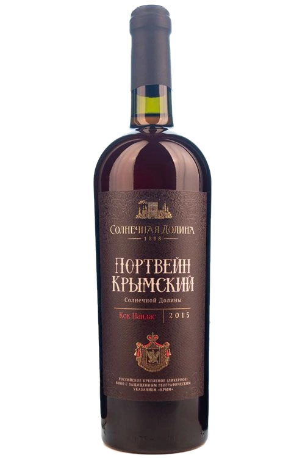
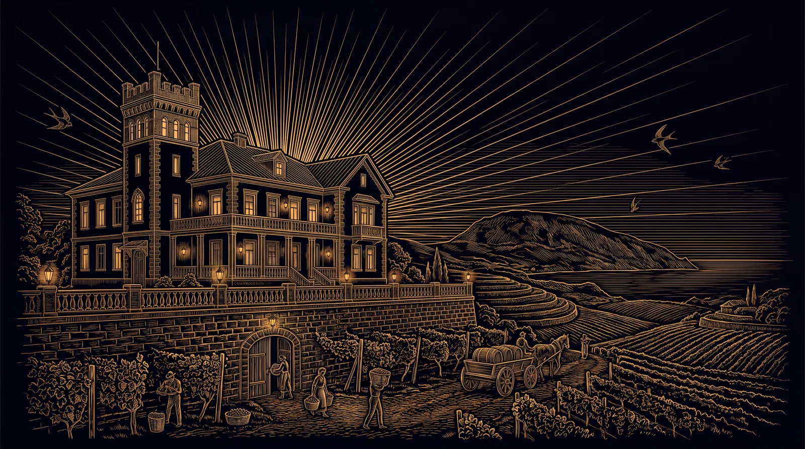

ПОРТВЕЙН КРЫМСКИЙ · КОКУР БЕЛЫЙ · СОЛНЕЧНАЯ ДОЛИНА
Портвейн КрымскийСолнечной Долины
Пять белых сортов, четыре из которых растут только здесь, и годы в большой бочке.

Досье
Раздел I · Досье
Что в бутылке
Полнотелое, мягкое, покоряющее своим неповторимым ароматом вино. Его сложность обусловлена использованием ягод различных сортов винограда, собранных со старых лоз. Долгая выдержка в дубовых бочках большого объёма придала этому вину дополнительную многоплановость и индивидуальность.
- Сортовой состав
- Кокур белый, ркацители, кок пандас, капсельский белый, солнечнодолинский
- Спирт
- 17,5% об.
- Сахар
- 95 г/дм³
- Выдержка
- Долгая выдержка в дубовых бочках большого объёма
- Объём
- 0,75 л.
- Подача
- 16–18 °С
- Бокал
- Небольшой тюльпанообразный бокал для креплёных вин
Дегустационная нота
- Цвет
- Янтарно-золотистый
- Букет
- Букет интенсивный, сложный, с преобладанием тонов сухофруктов, пряностей, цукатов, ванили, орехов
- Вкус
- Вкус насыщенный, полный, с пряно-медовыми тонами, привкусом сухофруктов и ржаной корочки, фруктовой кислотностью. Послевкусие длительное, с хорошо выраженными тонами выдержки
- Гастрономия
- Отличный дижестив после еды. Вы можете удачно сочетать его с любыми десертами, кроме шоколадных, с выдержанными сырами – особенно с сырами с голубой плесенью, а также с закусками и деликатесами на основе паштетов и копчёностей
Раздел II · Выдержка
Пять белых сортов и бочки большого объёма
Портвейн Крымский собран из кокура белого, ркацители, кок пандаса, капсельского белого и солнечнодолинского — четыре из пяти сортов растут только здесь. Вино уходит в дубовые бочки большого объёма и остаётся там годами.
В сувенирном релизе урожая 1991 года срок выдержки на карточке указан прямо: более тридцати лет. В «Винном гиде России — 2026» Портвейн Крымский вошёл в пятёрку лучших выдержанных вин страны.
Долгая выдержка в дубовых бочках большого объёма.Карточка вина · sunvalley1888.ru/carte/portvej-krymskij-solnechnoj-doliny

Раздел III · Архив выпусков
Годы, которые дом сохранил
Все релизы марки, которые дом показывает в каталоге сегодня — 3.
- Базовый 0,75 л. 17,5% об. · 95 г/дм³ Эта карточка
- 1991 Сувенирный · 0,75 л. 17,5%% об. · 95 г/дм³ Открыть карточку
- 1991 Хеопс · 0,75 л. 17,5%% об. · 95 г/дм³ Открыть карточку
Раздел IV · Визит
Легенду наливают в подвале.
Экскурсия по трём голицынским подвалам и дегустация 10 марок вин — 1 час 20 минут, от 1 450 ₽ за гостя. Начало в 10:00, 11:00, 13:00, 14:00, 15:00, 16:00 ежедневно; в 20:00 — дегустация при свечах по предварительной заявке.
с 10:00 до 17:00 без выходных · с. Миндальное, ул. Миндальная, 8А, дегустационный зал «Архадерессе»